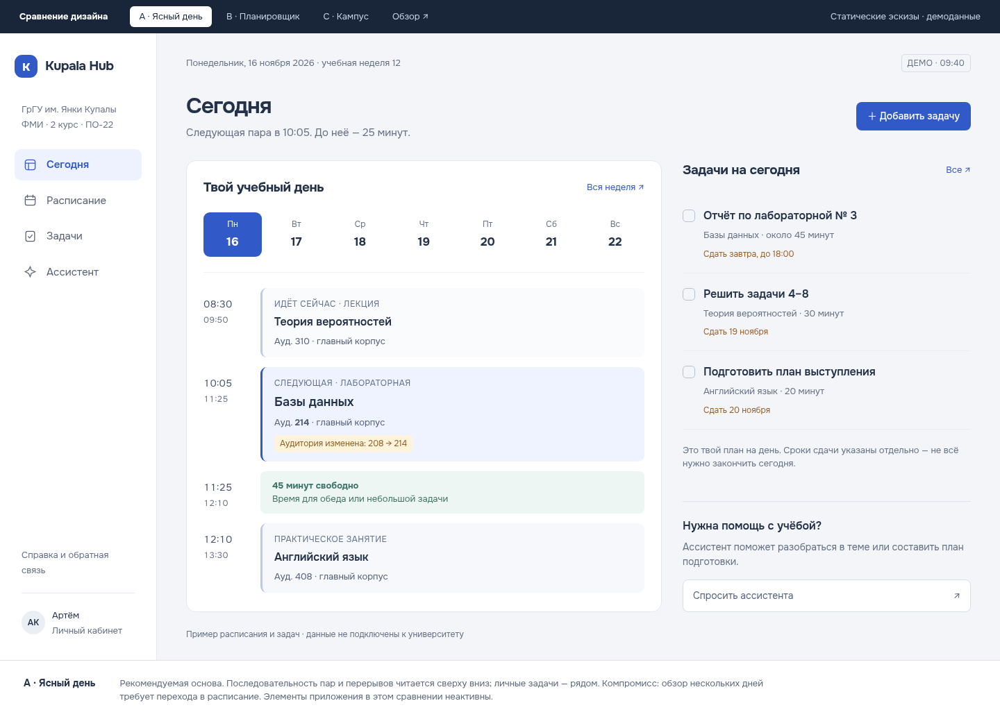
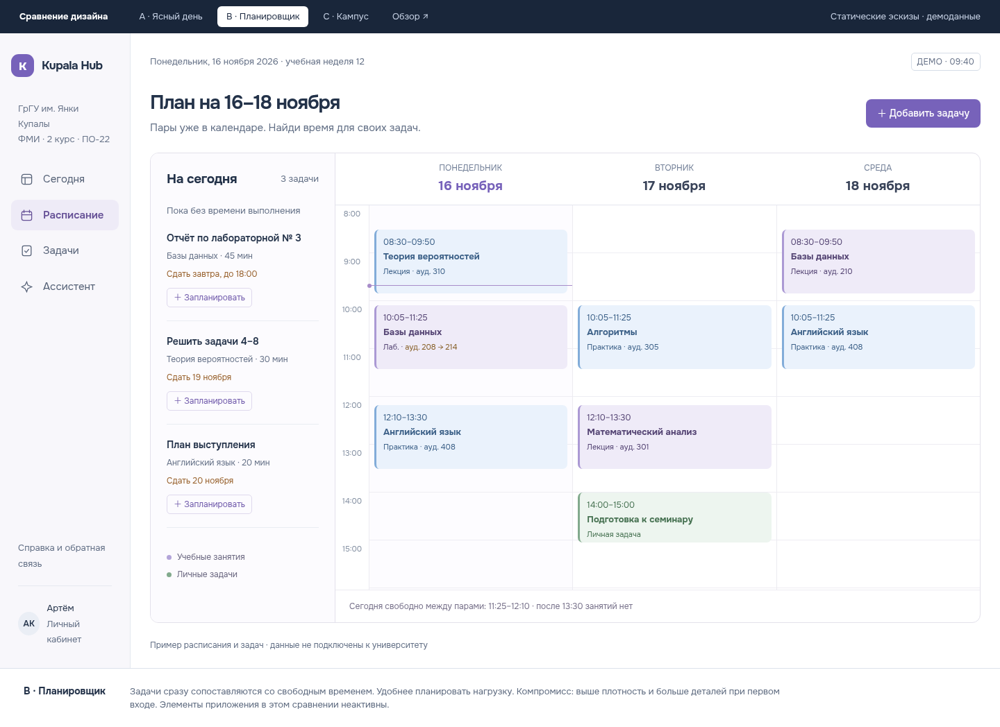
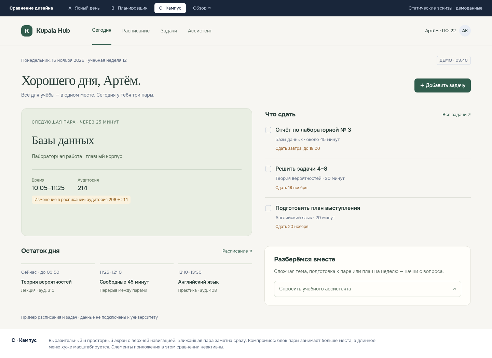

Три направления для десктопного веб-приложения. Один учебный день, одинаковые задачи, разные способы организовать информацию. Нажми на вариант, чтобы открыть макет в полном размере.

Рекомендуемая основа. Последовательность пар и перерывов читается сверху вниз; личные задачи — рядом. Компромисс: обзор нескольких дней требует перехода в расписание.
Открыть макет →
Задачи сразу сопоставляются со свободным временем. Удобнее планировать нагрузку. Компромисс: выше плотность и больше деталей при первом входе.
Открыть макет →
Выразительный и просторный экран с верхней навигацией. Ближайшая пара заметна сразу. Компромисс: блок пары занимает больше места, а длинное меню хуже масштабируется.
Открыть макет →Опубликованные интерфейсы Sunsama, Notion Calendar, Things и Structured; руководство Todoist. Важные идеи: пары отдельно от личных задач, свободное время видно, ближайшее действие понятно, второстепенные детали не перегружают главную.
Начать с «Ясного дня», а календарную композицию B использовать в разделе расписания. Удобство пока является гипотезой: мы ещё не проверяли эти экраны со студентами. Перед разработкой нужно выбрать направление и проработать в нём четыре основных экрана.